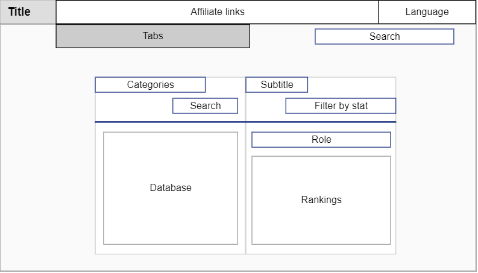

A: Work with Web Design:
1. Select a website of your choice and create or draw 5 different wireframes or sketches for different
main parts in the selected website (as Figure 3-2 and Figure 3-3 from the textbook). You may use
normal drawing or computer tool (painting, pencil, word, etc.).

2. In each wireframe/sketch, highlight the different headings, fonts type, font size, white spaces, or
any design critic you may want to add (See figure 5-2 in the textbook as an example for
comments/critics).
3. You may draw the Home webpage, mobile view, guest view, user view after login, products if any,
departments if any, buyer/seller views, e.g., for e-bay or amazon, Admin view if any, etc.